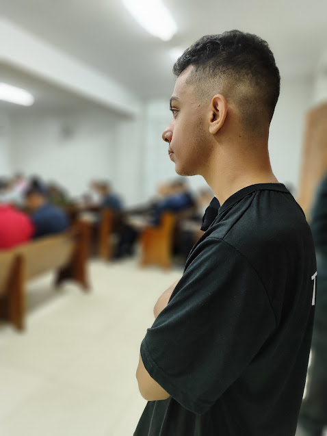

A historia de Guilherme Alves
Olá, sou Guilherme Alves, tenho 18 anos e nutro o sonho de me tornar um desenvolvedor web junior. Mesmo sem um computador próprio, isso não tem sido um obstáculo para perseguir minha paixão e aspirações. Acesse minhas redes e veja meus projetos!